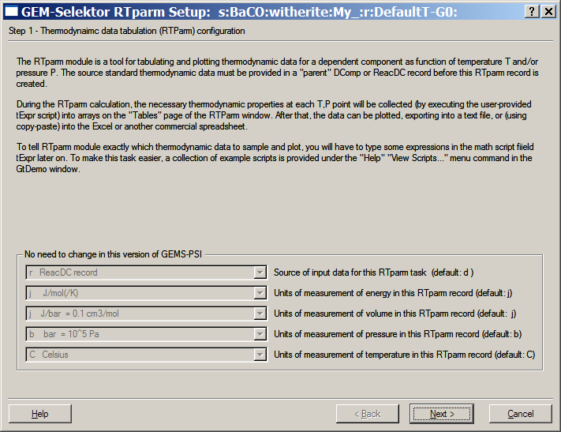

GEM-Selektor version 2-PSI GEM-Selektor version 2-PSI
GEM-Selektor version 2-PSI GEM-Selektor version 2-PSIPrevious Page Back to Start Page
(32) Creating a tabulator of T,P corrections (RTParm)
Once a new DComp or ReacDC record with thermodynamic
data
has been added to the project database, it might be very useful to
check
if data responsible for temperature and pressure corrections are fine.
GEMS
package offers a tool for this - the
RTParm module and record type.
One or more
RTParm
records can be created on top of any existing DComp or ReacDC record
and
can show you (in tabulated and graphical form) a range of T,P corrected
thermodynamic
data for a chemical species as function of temperature, pressure, or
both.
Methods of such corrections used in GEMS package are described in
T-corrections.pdf, T-corrections-Reac.pdf, and P-corrections.pdf documents that can
be
downloaded from this web site.
To create a
new
RTParm record, switch back into the "Thermodynamic Database Management"
dialog
(shown below)
and click on
a
"T/P Tabulations and Plots (RTparm)" button to open the RTparm module
window. There, execute the "Record" "Create..." menu command. A small
dialog pops up
immediately:
This dialog
asks
what sort of source record will be tabulated. Let us start with a
ReacDC
record for witherite BaCO3, just created as described on the previous
page. So, click on a "ReacDC" button to
proceed, and select the "s:BaCO:witherite:My_:"
record
from the appearing list:
Next, the
"Insert
new record key" dialog will appear:
Enter there
only
the last line, as shown above (to indicate that a default configuration
will
be used), and click "Ok". As expected, the program will show a "RTparm
Setup" wizard page (below).

Read it and
click "Next >" button to proceed to the second wizard page:
The default
modes values visible on the wizard are Ok for the first time, hence,
click "Next >" again to move to the last wizard page:
The setup fields on this (the last) wizard page are also fine. Click
"Finish" to proceed.
This will
bring
you to a "Scripts" page of the "RTParm" window:
The window
contains
two iterators (rpPi for pressures and rpTi
for for temperatures) that define start, end and increment values. The
order
of iteration in P and T is defined by a code in the rpMode
field, and the numbers of steps through pressures and temperatures are
given
in the rpNpT fields, together with the total
number of
calculations. The text in the tExpr field is a
math script
that tells the program what to sample as an abscissa (in this case,
temperatures
in K) and as an ordinate (values of molar Gibbs energy function Go
in kJ/mol). The data object fields xT, xP
and yF are accessible through the "Tables"
page,
and data fields twTK, twP and
twG
- through the "TPwork" page of the "RTParm" window.
Now, edit the
second
comment line as shown above; select the "Tables" page and click on the
"Calculate
record data"  toolbar button to tabulate Go values for
witherite.
The program asks whether to save the changed (due to remake)
record
data:
toolbar button to tabulate Go values for
witherite.
The program asks whether to save the changed (due to remake)
record
data:
Clicking
"Yes" will certainly do no harm. You should see how
the
xT, xP and yF columns are
filled
out with numbers. The full table shall look like that shown below.
Pressures
in the xP column correspond to the so-called
"saturated
vapor pressures" - partial pressures of H2O vapor at a given
temperature
(in bars). Temperature in the xT column is given
(according
to the math script) in Kelvins, so you can change "C" to "K" in the
header
field above xT and xP fields.
The
table can be easily exported into an ASCII file, if you click on the
"Print
data"  toolbar button and select a print script from the appearing list
(not
shown).
toolbar button and select a print script from the appearing list
(not
shown).
To make a
plot
of the calculated data, click on the "Plot data"  toolbar button. You should get a Graphics Dialog like that
below:
toolbar button. You should get a Graphics Dialog like that
below:
The graph can
easily
be customized. Click on "Customize" to get the "Customize Graph"
dialog:
Change the x
and
y intervals for the graph as shown above. You can also change the line
color
and thickness by clicking on a button in the "Plots list" frame. When
finished,
click "Ok" to get back to the Graph dialog. You can export the plot
into
a .png or other graphic file by clicking "Save Image..." button and
selecting
a file path/name. Such exported plot is shown below.
In a pretty much the same way, you can create a RTParm table and plot for any DComp record in your modelling project. If you will change some values (e.g. dSr or So) in the source record and save it to database, then a simple re-calculation of the RTParm record (or, better, cloning it under a different record key) will display the impact of changed parameter on T/P dependence of Go values. Try this as an exercise!
Coming back
to
ReacDC representation of thermodynamic data, you also can display T/P
dependences
of the properties of reaction such as logK (this is not possible with
DComp
data). You can modify the math script on the "Scripts" page to
pick
up any thermodynamic properties (calculated at runtime for each T,P
pair)
through the data object labels visible on the "TPwork" page (see
below).
The default
script
just picks up the Go value from the twG
data
object.
If you need
to tabulate/display more than one property or functions of it, click on
the "Remake" toolbar button of the RTparm window (or execute "Record"
"Remake" menu command). This will bring you back to the "RTparm Setup"
wizard shown above, where you will have to change necessary
configuration fields. Back to the RTparm "Scripts" page, add necessary
assignment operators to the script and execute the RTparm module.
(to be
continued)
Back to main GEMS-PSI page